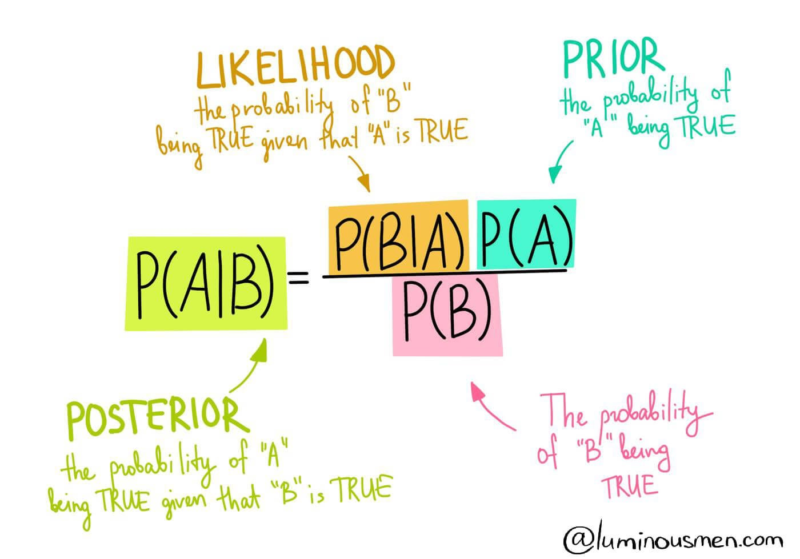

who am I?
- immigrant, expat, and nomad
- statistics & data science for over a decade
- startups & big tech
- Recurse Centre VS academia
- many "tech for good" initiatives
- currently: 1RG




1RG
Space + Labs + Incubator
1RG
community care + world building
summer fellowship
- source: Xavier
- inspired by Fractal University
- a container for independent, self-directed, research outside of traditional institutions
- 4 people cohort, individual enquiries
- you might think of it as community of practice
how it started
- self-directed
- lightly structured
- peer-to-peer accountability sessions
- interviews
- reflections (a blog!) and reviews
- body doubling
- final essay
why
these were very personal reasons!
- a forcing function for prioritizing thinking and writing
- my experience of academia as a soul crushing machine
- my experience at the Recurse Centre
how it ended
- weekly meetings at the park
- no screens
- coffee + pastries
- feelings checkins
- research discussion
- correspondences
- a retreat
my experience in the container
- back into reading books after many months
- uncovering a connection between community care and anti-capitalism
- expansive time at a time of transition
- deeper friendships
- support through transformation
some things we learned
- when you're in the research container everything you do is research
- allow for fluidity and co-creation
- find some friends to hold space with you/for you
- be vulnerable